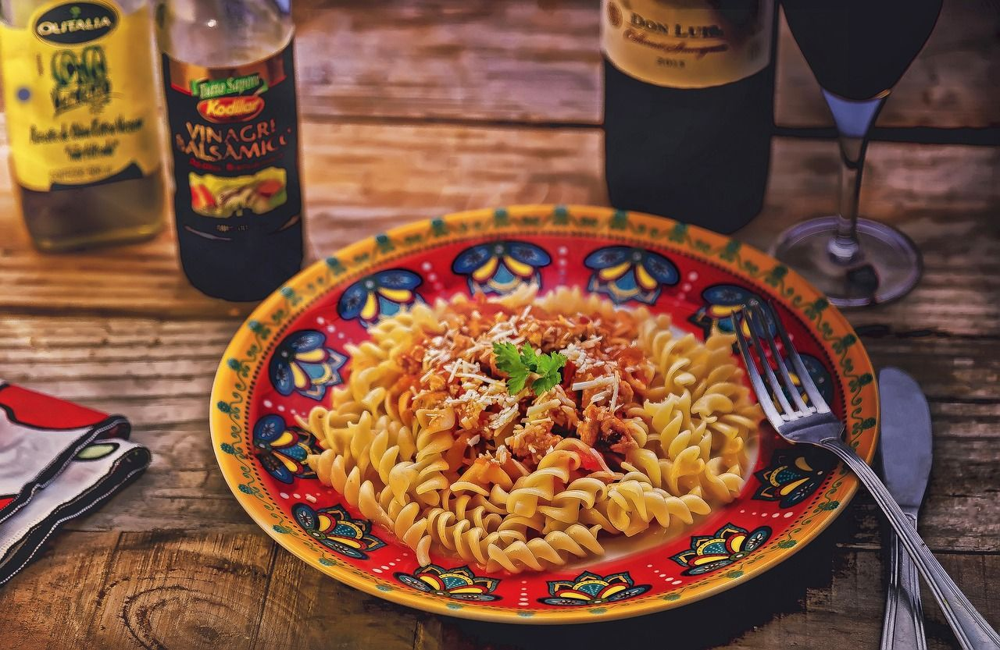

A arte da harmonização: Massas e vinhos
Sabor e tradição: Massas artesanais e vinhos exclusivos
O que é Harmonização com massas?
A Harmonização com Massas é o processo de combinar diferentes tipos de vinhos com pratos à base de massas, buscando realçar os sabores de ambos. A escolha do vinho certo pode transformar uma refeição simples em uma experiência gastronômica memorável, onde os aromas e texturas se complementam de maneira harmoniosa. É fundamental entender as características dos vinhos e das massas para alcançar essa sinergia perfeita.
O segredo é o molho
O ponto mais importante para harmonizar vinhos com massas é o molho. É ele que define qual o rótulo que irá combinar melhor com o prato, levando em conta fatores como a acidez, o corpo e o caráter tânico do vinho.
Massas ao molho vermelho
O molho vermelho feito à base de tomates, também conhecido como sugo, é um dos preferidos dos amantes de massas e um clássico da culinária italiana. O molho sugo pode acompanhar uma variedade de massas simples, como espaguetti, recheadas, como agnolotti, ou à base de batata ou mandioquinha, como o nhoque.
Para contrabalançar a acidez do molho de tomate o ideal são vinhos tintos de corpo médio e com aromas frutados. Os vinhos tintos da Itália são um ótima opção para harmonizar com massas com molhos vermelhos, já que foram os italianos que inventaram o molho ao sugo!
Massas ao Molho Branco ou Molho de Queijo
Molhos brancos e molhos à base de queijo apresentam textura cremosa e um bom teor de gordura. Para equilibrar essas características a recomendação são vinhos brancos produzidos com a uva Chardonnay.
Dicas para uma Harmonização Perfeita
Para garantir uma harmonização bem-sucedida, é importante considerar a intensidade dos sabores tanto do prato quanto do vinho. Além disso, a temperatura de serviço do vinho também influencia na experiência. Vinhos brancos devem ser servidos gelados, enquanto tintos podem ser apreciados em temperatura ambiente. Não hesite em experimentar diferentes combinações para descobrir novas nuances de sabor.
O Papel da Acidez na Harmonização
A acidez é um fator crucial na Harmonização com Massas, pois ajuda a equilibrar pratos ricos e pesados. Vinhos com alta acidez, como um Riesling seco, podem cortar a gordura de molhos cremosos, enquanto vinhos tintos com taninos suaves podem suavizar a intensidade de molhos mais pesados. A chave é encontrar um equilíbrio que realce tanto o vinho quanto a comida, criando uma experiência gastronômica memorável.
Quer receber mais dicas?
Preencha seu e-mail e receba as novidades